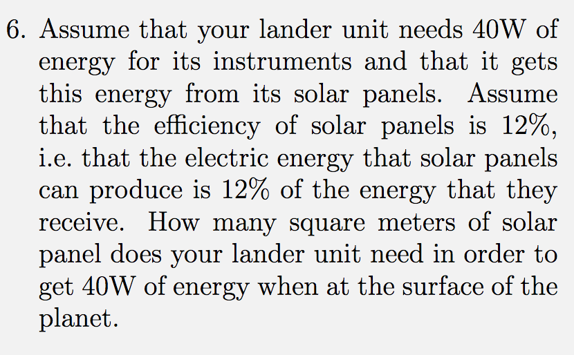

Forrige side🙂 🙁Fluks og luminositet
Hvis du får til denne oppgaven, så har du funnet fluksen FSaturn fra sola på Saturn (du skal altså ikke finne tall, men vite hvordan du kunne funnet dette tallet). Hvis du ikke fikk det til, bare anta at du har fått denne størrelsen. Da kan vi gå videre til neste deloppgave:

Igjen skal du kun diskutere hvordan oppgaven kan løses. Ikke gå videre før du har et forslag til løsning og repeter hele prosessen for hvordan du nå kan finne hvor stort solpanel du trenger for at en satelitt ved saturn skal få nok solenergi til å drive instrumentene ombord. Neste side